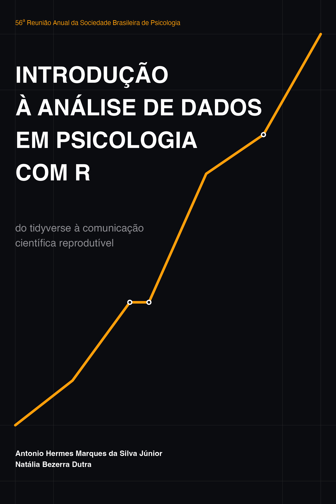

Introdução à análise de dados em Psicologia com R
do tidyverse à comunicação científica reprodutível
Introdução

A crise de replicabilidade tem sido amplamente debatida na área (Open Science Collaboration, 2015).
A crise de reprodutibilidade nas ciências sociais e do comportamento impôs uma nova realidade: o desenho de pesquisa moderno exige total transparência no tratamento e análise de dados. Este curso oferece uma imersão prática na linguagem R, utilizando a filosofia do tidyverse, um breve introdução aos relatórios dinâmicos do Quarto, e a extensão apaquarto para gerar artigos prontos para submissão.
Objetivos
Ao final deste programa, você será capaz de:
- Manipular bancos de dados complexos (escalas Likert, dados longitudinais) sem abrir planilhas eletrônicas.
- Automatizar a inversão de itens e o cálculo de escores globais e consistência interna (\(\alpha\) de Cronbach).
- Construir gráficos (com barras de erro e intervalos de confiança) dentro do padrão APA exigido por periódicos da área de psicologia.
- Gerar tabelas inferenciais (testes t, ANOVAs, Regressões) diretamente no padrão visual da APA 7.
- Vincular seu gerenciador de referências bibliográficas (Zotero) para compilar citações de forma nativa e sem erros de formatação.
Estrutura do minicurso
O curso está dividido em cinco módulos sequenciais e lógicos:
Fundamentos da linguagem R para Psicologia
- Introdução ao ambiente RStudio e arquivos Quarto (
.qmd). - Estruturas de dados comportamentais: Vetores, fatores e
tibbles. - O operador pipe nativo (
|>) para fluxo de leitura linear de código. - Estatística descritiva e códigos em texto dinâmico (inline).
Organização do manuscrito no estilo APA em Quarto
- Estruturação do cabeçalho YAML para metadados acadêmicos complexos (autores, afiliações, resumo)
- Divisão padrão das seções do manuscrito (Introdução, Método, Resultados e Discussão)
- Processo de compilação de um único arquivo-fonte
.qmdem saídas formatadas em PDF ou Word (DOCX).
Visualização de dados
- Gramática dos gráficos com
ggplot2. - Gráficos de dispersão personalizados para correlações.
- Gráficos de barras com barras de erro baseadas em Erro-Padrão (EP) e Intervalos de Confiança (IC).
- Aplicação do
theme_classic()e remoção de linhas de grade no padrão APA 7.
Inferência estatística e tabelas automatizadas
- Testes de hipóteses modernos: Teste t de Student e ANOVA.
- Limpando saídas estatísticas com o pacote
broom. - Geração automatizada de matrizes de correlação e regressão múltipla em arquivos
.docusandoapaTables. - Geração automatizada de tabelas usando o
papaja`
Gerenciamento de citações
- Gerenciamento e exportação de metadados em formato BibTeX (
.bib). - Inserção de citações parentéticas e narrativas via chaves de identificação.
- Compilação automatizada da seção final de referências com recuo pendente.
Pré-requisitos técnicos
Antes de iniciar o Módulo 1, certifique-se de que seu ambiente computacional possui os softwares atualizados. Execute os seguintes comandos no console do seu R para instalar os pacotes necessários para todo o curso:
# Instalação dos pacotes principais do curso
install.packages(c("tidyverse", "broom", "psych", "flextable",
"ftExtra", "remotes", "apaTables", "knitr",
"papaja"))Para habilitar a compilação de PDFs e documentos Word no padrão APA diretamente pelo terminal do projeto, adicione a extensão oficial rodando o comando abaixo no terminal da sua máquina (dentro da pasta do projeto):
install.packages("quarto")
quarto::quarto_use_template("wjschne/apaquarto")Como utilizar este material
- Estudo Dirigido: Leia a parte teórica de cada módulo.
- Execução de Código: Copie e execute os blocos de código (chunks) no seu RStudio para observar o comportamento dos dados simulados.
- Desafios Práticos: Resolva os exercícios propostos ao final de cada módulo para consolidar a autonomia na escrita dos seus próprios scripts.